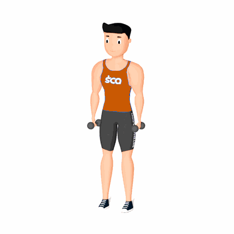

Rosca Bíceps com Rotação

Exercício para fortalecimento e hipertrofia dos bíceps, com enfoque aos músculos bíceps braquiais. Realiza de forma lenta e controlada.
Ficha Técnica
Tipo: Musculação
Grupo Muscular: Bíceps
Aparelho: Nenhum
Músculos: Nenhum
Como realizar
- Na posição em pé, realize a pegada neutra com dois halteres em uma distância semelhante a dos ombros;
- Cabeça e costas alinhadas, joelhos semiflexionados, pés ligeiramente separados para se obter uma base estável para execução;
- Braços estendidos, realize a flexão e rotação dos cotovelos contraindo os músculos dos bíceps e alterando a pegada para supinada, trazendo os pesos simultaneamente em direção aos ombros;
- Retorne à posição inicial de forma controlada e repita o movimento, conforme o número de repetições orientado pelo professor.
 RC STORE
RC STORE